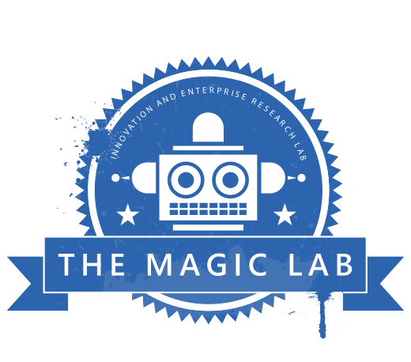

# Social Robotics ## the state of the art ###### Jesse Clark
What is a social robot?
######  At the intersection of these disciplines, we encounter new modes of interaction and unique challenges. Note: Intelligent agents: text-based chatbots, voice-controlled virtual assistants, software "wizards", self-checkout machines Embodied robots: manufacturing, remote-controlled things, vending machines Social creatures: when you interact with the above, the normal mode is not social --- ######  At [the Magic Lab](https://www.themagiclab.org/), we study human responses to interactions with robots. Robot gestures, questions, and commands can influence people differently than the same thing coming from a human or a faceless machine. - [Be More Transparent and Users Will Like You: A Robot Privacy and User Experience Design Experiment](HRI2018_privacy_resubmitted.pdf) - [Embodiment, Privacy, and Social Robots: May I remember you?](ICSR%202017%20Poster.pdf) - [Bon Appetit! Robot Persuasion for Food Recommendation](lb1160-herseAh.pdf)
RoboCup
RoboCup is a worldwide competition for autonomous robots. Participants are published researchers from academia and industry. Competition drives innovation from year to year and directs attention to effective techniques. Note: compare to FIRST Robotics, BattleBots --- ### Soccer Competing against other autonomous robots places an emphasis on speed of image processing and decision making. - Small Size League: (wheeled) SSL-Vision system supports whole-team coordination - Mid Size League: (wheeled) Uses a regular size soccer ball - Standard Platform League: (baby size humanoid) SoftBank NAO - Humanoid League: (kid size, teen size, adult size) Explore difficult mechatronics problems <!-- .element: style="font-size: 80%" --> <h1 style="margin-top:-20px"></h1> Note: UTS Unleashed competed in the NAO league years ago, and developed a novel attention architecture for dynamic behavior --- ### Rescue League Urban search and rescue scenario (traverse difficult terrain, operate hatches and controls). Mix of autonomous operation and tele-operation. # --- ### @Work ###### Logistics League: pathfinding and manipulation in a mock warehouse # --- ### @Home ###### Household tasks in a mock apartment - Domestic Standard Platform League: The <a href="http://newsroom.toyota.co.jp/en/detail/8709541/" target="_blank">Toyota Human Support Robot</a> (HSR) has good sensors for safe locomotion, and a good gripper for manipulation. - Social Standard Platform League: <span><a href="https://www.ald.softbankrobotics.com/en/cool-robots/pepper/find-out-more-about-pepper" target="_blank">Softbank Robotics Pepper</a> has a friendly face, a large tablet display, and touch sensors on its hands and head. --- ### @Home - Open Platform League: Every custom platform is allowed.
Standard Robot Platforms
Some leagues compete to *build or modify* robots, and are very focused on mechatronics and dynamics. Other leagues use a **standard hardware platform**. All teams work with the same hardware, and compete to get the best performance without modifications. A common approach in robotics research is to use the onboard computer as a dumb interface to the hardware, while running the main program on an auxiliary computer (such as nvidia Jetson or an Alienware laptop). This is not allowed in **standard platform** leagues. External computing services are allowed, but wifi connectivity is not guaranteed. Note: opinions differ as to weather "software modifications" are allowed --- Robot platforms have a long lifecycle. A platform in active production may not be compatible with current versions of network protocols and container engines. For example, Pepper's main computer runs a modified version of Linux Kernel 4.0 on a 32-bit Atom CPU. The kernel includes a binary blob from the manufacturer, which can generally only be updated when the they update the entire platform. This means lots of compiling, linking, testing, and installing in userspace. --- ######  ###### SoftBank Robotics Pepper
ROS
ROS (Robot Operating System) is a publish/subscribe system for networked systems of sensors, processors, and actuators. It is portable, but is generally run on Ubuntu. Support for a specific robot platform often lags behind an entire LTS version. (That is, in 2020 you would expect to run Ubuntu 2018.4, with a Linux kernel from 2015.) ROS is the de-facto standard platform for publishing robotics research code. It is essential for making use of existing work on autonomous navigation. --- ROS places some constraints on network design: - Public IP address of master node must be known before system initialization. - Arbitrary ports must be forwardable on any node that joins the cluster. A typical ROS system consists of a WiFi/VPN basestation, a GPU server, and one mobile robot. Note: If we want to run a ROS node in a Docker container, we would need to limit the ports ROS can choose from and open them in Docker in advance. Or join a VPN, or multiple VPNs for multiple robots.
RoboCup@Home Format
<iframe width="560" height="315" src="https://www.youtube.com/embed/0bvCyXi7c1Q" frameborder="0" allow="accelerometer; autoplay; encrypted-media; gyroscope; picture-in-picture" allowfullscreen style="float:right"></iframe> <br><br> The RoboCup@Home competition consists of a series of challenges which are scored by human judges. These include social and domestic tasks such as: - Set the table - Take out the garbage - Find a household object - Meet and greet people, introduce them, help them find friends - Take guests' food and drink orders, carry trays - Escort someone to their taxi <!-- .element: style="float: left" --> Note: - Does the robot behave dynamically? - No, we spend 5 weeks to script a 5-minute interaction, because we don't want anything unexpected to happen during the brief time limit. --- The rules of the challenges are published several weeks before the competition. The exact layout of the arena (a mock apartment) and the exact objects to be used are not known until 24 hours before the competition. --- The capabilities required to complete these challenges generally include: - Safe navigation in a domestic space (benefits from knowing the exact map) - Perception and manipulation of household objects (benefits from knowing the exact objects) - Perception of human voices, faces, and gestures (can mostly be prepared in advance)
UTS Unleashed! Strategy
###### **UTS Unleashed!** team, from University of Technology Sydney ###### RoboCup@Home Social Standard Platform League ###### First place, RoboCup 2019 # --- ### Operational Readiness Tests Over the course of the semester leading up to the competition, we rehearsed challenges on a regular basis, including moving the entire operation off-site. At some tests we forced key personnel to be absent. We prioritized getting scores above 0 for each challenge, and worked on adding robustness to the "path to the first point." Note: To facilitate moving off-site for tests and for the eventual competition, we set up a portable on-premises continuous integration system ([GitLab Runner](https://docs.gitlab.com/runner/)) and Pip and Debian package servers. --- ### Userspace Operating System We published [`pepper_os`](https://github.com/awesomebytes/pepper_os), a userspace operating system based on [Gentoo Prefix](https://wiki.gentoo.org/wiki/Project:Prefix). It uses a continuous integration system to compile current ROS dependencies for Pepper's CPU and kernel, and package them as a tarball that can be deployed without root access. This lets us run mature ROS packages on the onboard computer. --- ### Fault-tolerant Architecture - High-quality networked services (Tensorflow on local server, Google Cloud Speech to Text, Yandex reverse image search) (Amazon Transcribe and Azure Facial Recognition API were considered) - Onboard fallbacks for all services in case of network problems (neural nets on CPU, pocket sphinx, OCR) - We created the "Magic ROS" system for automatically selecting the best option among simultaneous services - Each service reports its status in a diagnostics system that can be used as a "pre-flight checklist" --- ### Real-Time Appearance-Based Mapping Almost all challenges involve navigation, and a single collision with an obstacle is disqualifying. Pepper includes laser range sensors around its base, for obstacle detection. Early work with this platform tried to use these lasers for Simultaneous Localization and Mapping (SLAM), but they are much lower resolution than what is normally used on research robots. Using RGB+depth camera images to localize in 3D space is more CPU-intensive, but much more accurate. Combined with Adaptive Monte Carlo Localization (AMCL), it is able to navigate anywhere in the arena in under 1 minute. Note: Cute hack: we use the `SIGSTOP` and `SIGCONT` Linux IPC signals to pause CPU usage when localization is not needed. --- ### On-site Transfer Learning The general requirements for object perception are known in advance, but we want to optimize a neural net for the specific objects used in competition. We used a pretrained network based on YOLO ("You Only Look Once") with depth support. We re-trained the top layer to recognize only competition objects, using images from the robot's camera. It takes a few hours to capture and label video of all the objects, then it can train overnight. Note: For example, if the robot thinks it sees an object that is not part of the competition, it has wasted its time. But if it mistakenly sees one valid object as a different valid object, that can lead toward a productive interaction.
## References [UTS Unleashed! Team Description Paper PDF](UTS%20Unleashed%202019%20RoboCup%20SSPL%20TDP.pdf) [UTS Unleashed! Champions Paper PDF](UTS_Unleashed__Champions_paper_final.pdf) [UTS Unleashed! 2019 Poster PDF](RoboCup2019-Poster.pdf) [UTS Unleashed! 2018 Poster PDF](Robocup%202018%20Poster.pdf)